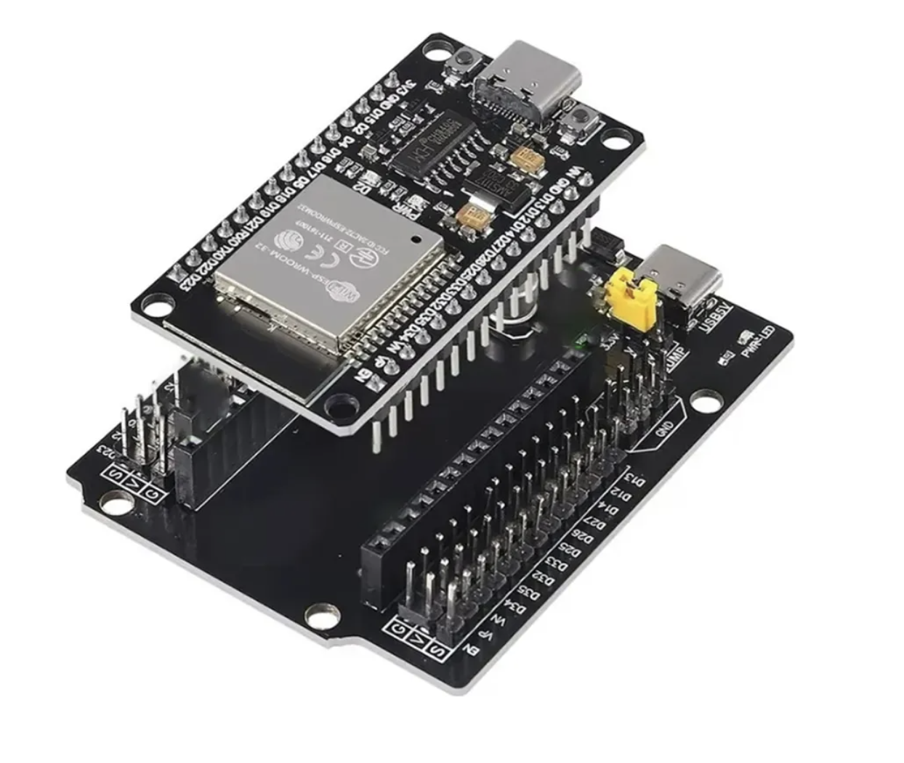
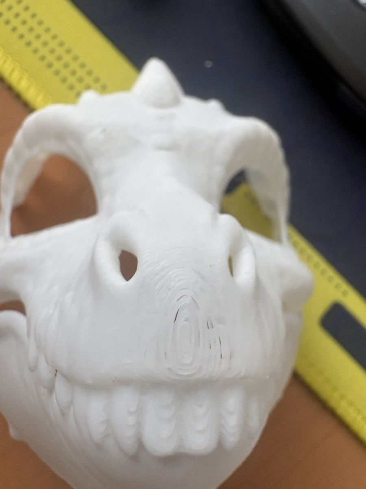
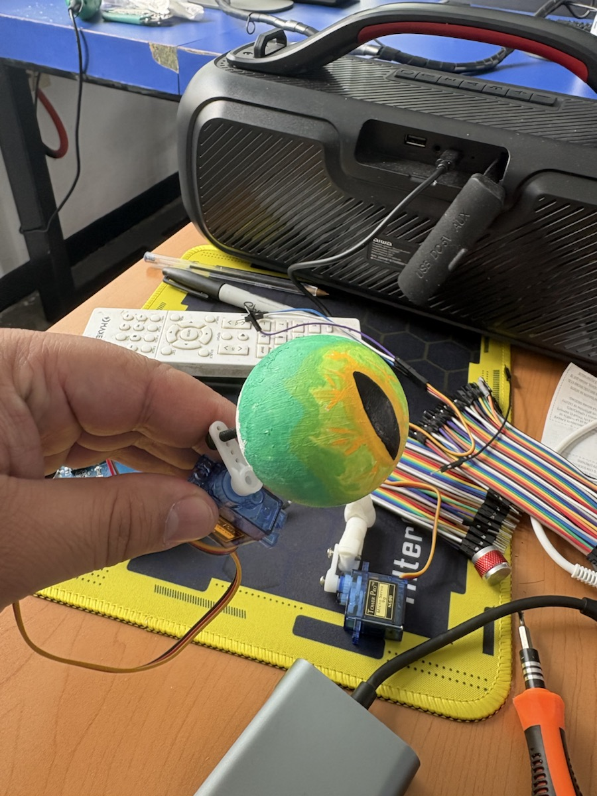

Guía de trabajo
Título de la práctica: Cabeza dinosaurio
Modalidad: Individual o por equipos
Duración estimada: 4 a 6 sesiones
Antes de elegir la ruta final, revisa el tamaño real de la cabeza, el espacio interno y la distancia entre los dos ojos.
Producto final identificado
La cabeza de dinosaurio puede terminarse por dos vertientes válidas, según el espacio disponible y el efecto visual que se busque. La primera ruta usa Arduino y ojos animatrónicos funcionales con servomotores. La segunda ruta usa ESP32 y pantallas redondas para crear ojos digitales de reptil. Ambas pueden ser producto final si están bien justificadas, armadas y probadas.
Dos rutas posibles para el producto final
La decisión no depende solo del código. También depende del tamaño de la cabeza, la separación entre los ojos, el espacio para servos, el peso del mecanismo y el tiempo disponible para calibrar. Si la cabeza permite montar varillas, soportes y párpados sin atorarse, la ruta animatrónica con Arduino es adecuada. Si el espacio es reducido o se busca un efecto visual estable con iris de reptil, la ruta digital con ESP32 puede ser mejor.
Ruta principal: Arduino con tres servomotores
Arduino Uno es adecuado cuando el objetivo principal es mover piezas físicas: globo ocular, soporte del ojo, varilla o clip del párpado. En esta ruta, cada servo recibe ángulos y el proyecto se concentra en calibrar movimiento, evitar roces y encontrar límites seguros. Antes de duplicar el mecanismo, se debe confirmar que la distancia entre los dos ojos permita instalar ambos conjuntos sin que las piezas choquen entre sí o contra la máscara.

Referencia visual del ojo mecatrónico: sirve para observar el movimiento físico antes de decidir ángulos, soportes y espacio dentro de la cabeza.
- Servo horizontal en pin 2: mueve el ojo hacia un lado, centro y el otro lado.
- Servo vertical en pin 3: mueve el ojo hacia abajo, centro y arriba.
- Servo de párpado en pin 4: abre y cierra el párpado.
- Es más directo para estudiantes que están aprendiendo control de servos.
- Conviene cuando hay suficiente profundidad dentro de la cabeza para servos, soportes y varillas.
Ruta digital: ESP32 con pantallas redondas
El ESP32 se usa para construir ojos digitales cuando se quiera dibujar el iris en pantallas redondas en lugar de mover un ojo físico. En esa ruta, cada ojo se dibuja en una pantalla TFT GC9A01 de 1.28 pulgadas, 240 x 240 pixeles, con comunicación SPI. Esta opción también puede ser producto final si las pantallas quedan bien centradas, la distancia entre ojos se ve natural para el tamaño de la cabeza y la animación se mantiene estable.

Referencia visual de los ojos digitales: sirve para revisar alineación, separación entre pantallas y estabilidad de la imagen con ESP32.
Cómo decidir entre Arduino y ESP32
| Ruta | Producto final posible | Conviene cuando | Revisión obligatoria |
|---|---|---|---|
| Arduino Uno | Ojos animatrónicos funcionales con movimiento físico y párpado | La cabeza tiene espacio para servos, soportes, cables y recorrido mecánico | Medir profundidad interna, ancho disponible y distancia entre ambos ojos antes de fijar piezas |
| ESP32 | Ojos digitales de reptil con dos pantallas redondas TFT | La cabeza no permite mecanismos grandes o se busca un efecto visual más estable | Medir diámetro visible, separación entre pantallas y orientación para que ambos ojos queden alineados |
La entrega debe indicar cuál ruta se eligió y por qué. No se evalúa como mejor una ruta sobre la otra: se evalúa que la solución sea coherente con la cabeza construida y que funcione de forma estable.
Ver documentación de la alternativa con ESP32 y pantallas
Hardware usado en la alternativa con ESP32
- 1 ESP32.
- 2 pantallas redondas TFT GC9A01 de 1.28 pulgadas, 240 x 240 pixeles, SPI.
- Expansion board para ESP32 con filas S, V y G.
- Cables Dupont.
En la expansion board, S significa señal, V significa voltaje y G significa tierra. Los pines de señal de las pantallas deben conectarse en la fila S.
Pines confirmados
| Señal | Ojo izquierdo | Ojo derecho |
|---|---|---|
| VCC | 3V3 | 3V3 |
| GND | GND | GND |
| SCL | GPIO21 | GPIO22 |
| SDA | GPIO23 | GPIO16 |
| DC | GPIO19 | GPIO17 |
| RST | GPIO18 | GPIO2 |
| CS | GPIO5 | GPIO4 |
Librerías usadas
#include <Adafruit_GC9A01A.h>
#include <Adafruit_GFX.h>
#include <SPI.h>Proceso de prueba
- Primero se conectó y probó el ojo izquierdo.
- Después se agregó el ojo derecho.
- Se confirmó que ambas pantallas encendían y mostraban imagen con el ESP32.
- Se probaron versiones con una pantalla, dos pantallas, iris tipo reptil, parpadeo, movimiento de ojos y pupila con efecto de dilatación.
Decisión actual para los ojos digitales
En la ruta con ESP32, por ahora se recomienda dejar la pupila fija y animar solo textura ligera dentro del iris. Con el cableado actual, cada pantalla usa sus propios pines SPI por software y el ESP32 dibuja primero una pantalla y luego la otra. Cuando se intentan animaciones grandes, el borrado y repintado de pixeles puede notarse demasiado. La regla visual actual es: no mover la pupila, no mover párpados digitales y animar solo pequeños destellos o fibras del iris.
Código base de ojos fijos
#include <Adafruit_GC9A01A.h>
#include <Adafruit_GFX.h>
#include <SPI.h>
const int LEFT_TFT_SCK = 21;
const int LEFT_TFT_MOSI = 23;
const int LEFT_TFT_DC = 19;
const int LEFT_TFT_RST = 18;
const int LEFT_TFT_CS = 5;
const int RIGHT_TFT_SCK = 22;
const int RIGHT_TFT_MOSI = 16;
const int RIGHT_TFT_DC = 17;
const int RIGHT_TFT_RST = 2;
const int RIGHT_TFT_CS = 4;
Adafruit_GC9A01A leftEye(LEFT_TFT_CS, LEFT_TFT_DC, LEFT_TFT_MOSI, LEFT_TFT_SCK, LEFT_TFT_RST);
Adafruit_GC9A01A rightEye(RIGHT_TFT_CS, RIGHT_TFT_DC, RIGHT_TFT_MOSI, RIGHT_TFT_SCK, RIGHT_TFT_RST);
const int CX = 120;
const int CY = 120;
uint16_t rgb(Adafruit_GC9A01A &d, int r, int g, int b) {
return d.color565(r, g, b);
}
bool insideEyeOpening(int x, int y) {
int dx = x - CX;
int curve = (dx * dx) / 115;
int topEdge = 51 + curve;
int bottomEdge = 190 - curve;
return y >= topEdge && y <= bottomEdge;
}
uint16_t irisColor(Adafruit_GC9A01A &d, int x, int y) {
int dx = x - CX;
int dy = y - CY;
float dist = sqrt(dx * dx + dy * dy);
if (dist > 84 || !insideEyeOpening(x, y)) {
return GC9A01A_BLACK;
}
float angle = atan2(dy, dx);
float rays = sin(angle * 18.0 + dist * 0.16);
if (dist < 25) return rgb(d, 224, 112, 8);
if (dist < 43) return rgb(d, 204, 224, 26);
if (dist < 61) {
if (rays > 0.45) return rgb(d, 245, 242, 46);
return rgb(d, 96, 166, 14);
}
if (dist < 75) {
if (rays > 0.55) return rgb(d, 135, 190, 18);
return rgb(d, 24, 82, 7);
}
return rgb(d, 5, 23, 3);
}
void drawStaticEye(Adafruit_GC9A01A &d) {
d.fillScreen(GC9A01A_BLACK);
for (int y = 0; y < 240; y++) {
for (int x = 0; x < 240; x++) {
uint16_t c = irisColor(d, x, y);
if (c != GC9A01A_BLACK) {
d.drawPixel(x, y, c);
}
}
}
d.drawCircle(CX, CY, 82, rgb(d, 2, 10, 1));
d.drawCircle(CX, CY, 55, rgb(d, 235, 229, 38));
d.fillTriangle(CX, CY - 80, CX - 16, CY, CX + 16, CY, GC9A01A_BLACK);
d.fillTriangle(CX, CY + 80, CX - 16, CY, CX + 16, CY, GC9A01A_BLACK);
d.fillRoundRect(CX - 8, CY - 68, 16, 136, 8, GC9A01A_BLACK);
d.fillCircle(CX - 22, CY - 30, 6, GC9A01A_WHITE);
d.fillCircle(CX - 20, CY - 28, 2, rgb(d, 230, 230, 230));
}
void beginDisplay(Adafruit_GC9A01A &d) {
d.begin(8000000);
d.setRotation(0);
d.invertDisplay(true);
}
void setup() {
Serial.begin(115200);
delay(1000);
pinMode(LEFT_TFT_CS, OUTPUT);
pinMode(LEFT_TFT_DC, OUTPUT);
pinMode(LEFT_TFT_RST, OUTPUT);
pinMode(RIGHT_TFT_CS, OUTPUT);
pinMode(RIGHT_TFT_DC, OUTPUT);
pinMode(RIGHT_TFT_RST, OUTPUT);
digitalWrite(LEFT_TFT_CS, HIGH);
digitalWrite(RIGHT_TFT_CS, HIGH);
digitalWrite(LEFT_TFT_RST, HIGH);
delay(100);
digitalWrite(LEFT_TFT_RST, LOW);
delay(100);
digitalWrite(LEFT_TFT_RST, HIGH);
delay(300);
digitalWrite(RIGHT_TFT_RST, HIGH);
delay(100);
digitalWrite(RIGHT_TFT_RST, LOW);
delay(100);
digitalWrite(RIGHT_TFT_RST, HIGH);
delay(300);
beginDisplay(leftEye);
beginDisplay(rightEye);
drawStaticEye(leftEye);
drawStaticEye(rightEye);
}
void loop() {
}Ventajas del ESP32 para esta alternativa
- Tiene suficientes GPIO para dos pantallas y otros módulos.
- Es más potente que un Arduino Uno o Nano.
- Puede manejar SPI, I2C, UART, PWM e I2S.
- Puede controlar pantallas TFT y conectarse a microSD.
Prototipos de práctica antes del modelo final
Las piezas de la máscara y del ojo que aparecen en esta sección son prototipos iniciales. No representan el acabado final del dinosaurio: se usarán para practicar armado, ajuste, pintura y corrección de errores antes de trabajar con las piezas definitivas.
El objetivo es aprender con estas pruebas sin perder de vista el modelo final. Si una pieza queda chueca, roza, se pinta de forma irregular o no permite cerrar bien el ojo, no se considera un fracaso; se registra como una mejora que deberá aplicarse cuando llegue la versión final.


El video se muestra sin sonido para que se use como referencia visual del movimiento del prototipo de ojo.
Qué deben practicar con estos prototipos
- Identificar dónde se colocarán los servos y qué partes podrían estorbar el movimiento.
- Medir la distancia entre los dos ojos y comprobar si caben mecanismos completos o pantallas redondas.
- Comparar la profundidad interna de la cabeza con el espacio requerido por servos, varillas y cables.
- Ensayar lijado, unión de piezas, refuerzos y pintura sin arriesgar el modelo final.
- Probar ángulos pequeños antes de usar movimientos amplios en el mecanismo de ojos.
- Anotar errores visibles y decidir qué se corregirá en la versión final.
Preguntas para documentar las pruebas
Contesta estas preguntas después de manipular los prototipos. Las respuestas servirán como guía para no repetir los mismos errores cuando se arme la cabeza definitiva.
Evidencia mínima de esta etapa
- Foto de la máscara y el ojo antes de hacer ajustes.
- Foto o video corto de una prueba de movimiento del ojo.
- Medida aproximada del ancho de la cabeza, profundidad interna y distancia entre los dos ojos.
- Lista de al menos tres mejoras que se aplicarán al modelo final.
- Registro de los ángulos seguros encontrados para mover ojos y párpados.
Importante: estas imágenes sirven como referencia de prueba. La entrega final debe mantener la idea de una cabeza de dinosaurio expresiva, ya sea con ojos animatrónicos funcionales o con ojos digitales estables.
Objetivo 1: Investigar cómo se perciben ojos vivos
Descripción: Observar durante un tiempo breve cómo parpadean las personas, animales o personajes animados. Identificar qué hace que una mirada parezca viva: cierre breve del párpado, dirección de la mirada, brillo, textura del iris o pequeñas variaciones.
Entrega: Registro de cinco observaciones y tres conclusiones sobre mirada, parpadeo, brillo o textura.
Evaluación: Las conclusiones ayudan a justificar si conviene una solución mecánica con movimiento físico o una solución digital con ojos estables y expresivos.
Objetivo 2: Planear los movimientos del ojo y el párpado
Descripción: Definir la ruta que se usará. Si es Arduino, ordenar los estados mirar izquierda, mirar centro, mirar derecha, párpado abierto y párpado cerrado. Si es ESP32, definir ojo encendido, pupila fija, iris visible y animación ligera del iris.
Entrega: Secuencia ilustrada de cada estado con posiciones, tiempos aproximados y medidas básicas de la cabeza.
Evaluación: La secuencia distingue la ruta elegida y justifica si el tamaño de la cabeza y la distancia entre ojos permiten el montaje.
Objetivo 3: Diseñar el montaje de los ojos
Descripción: Revisar el diagrama y crear un boceto frontal de la cabeza. En la ruta Arduino, identificar servo horizontal, servo vertical y servo del párpado. En la ruta ESP32, ubicar las dos pantallas, su orientación, cables y soporte.
Entrega: Diagrama etiquetado con medidas aproximadas, distancia entre ojos y sentido de montaje de la ruta elegida.
Evaluación: El diseño deja espacio para mover el ojo y parpadear sin forzar el mecanismo, o para montar pantallas alineadas sin tapar el área visible.
Objetivo 4: Calibrar la ruta elegida
Descripción: En Arduino, conectar un servo a la vez y probar ángulos pequeños hasta encontrar posiciones seguras. En ESP32, probar cada pantalla por separado, confirmar pines, orientación, brillo y alineación.
Entrega: Tabla con ángulos seguros si se usan servos, o tabla de pines y prueba de encendido si se usan pantallas.
Evaluación: Los valores o conexiones fueron probados y permiten un funcionamiento claro sin forzar mecanismo, cables ni pantallas.
Objetivo 5: Programar el comportamiento de los ojos
Descripción: En Arduino, coordinar el servo horizontal, el servo vertical y el servo del párpado. En ESP32, dibujar ambos ojos, mantener la pupila fija y probar una animación ligera en el iris.
Entrega: Video de tres ciclos completos en Arduino, o video de los dos ojos digitales encendidos y estables en ESP32.
Evaluación: La ruta Arduino muestra movimiento y parpadeo sin atorarse. La ruta ESP32 muestra ojos alineados, pupila estable y animación ligera sin repintado excesivo.
Objetivo 6: Integrar el movimiento en la máscara
Descripción: Colocar la solución elegida dentro de la máscara. En la ruta Arduino, probar si el ojo puede moverse en horizontal, vertical y parpadear sin rozar. En la ruta ESP32, probar que ambas pantallas queden alineadas, separadas correctamente y visibles desde el frente.
Entrega: Video comparativo con una prueba fuera de la máscara y una prueba dentro de la máscara, o fotos claras de alineación si se usan pantallas.
Evaluación: La prueba muestra que el montaje cabe en la cabeza, que la separación entre ojos es coherente y que la solución funciona sin forzar piezas ni cables.
Objetivo 7: Mejorar sincronización y montaje
Descripción: Observar roces, piezas flojas, movimientos invertidos, pantallas desalineadas o cables tensos. Ajustar ángulos, tiempos, soportes u orientación sin cambiar las funciones principales del proyecto.
Entrega: Lista de ajustes realizados y prueba continua de al menos cinco ciclos de mirada y parpadeo, o cinco minutos de ojos digitales estables.
Evaluación: Los mecanismos no se atoran, los servos no se fuerzan o, en la ruta digital, las pantallas conservan imagen estable y alineada.
Materiales
Ruta Arduino animatrónica
- 1 Arduino Uno
- 3 servomotores SG90 o similares para un ojo
- 1 mecanismo de ojo animatrónico con eje horizontal, eje vertical y párpado
- Fuente externa regulada de 5 V para los servos
- Protoboard
- Cables Dupont
- 1 cable USB
Ruta ESP32 digital
- 1 ESP32
- 2 pantallas redondas TFT GC9A01
- Expansion board para ESP32
- Cables Dupont
- 1 cable USB
Descripción general
La práctica permite elegir entre dos soluciones. En la ruta Arduino, se controlan tres servos en un ojo animatrónico: horizontal, vertical y párpado. En la ruta ESP32, se controlan dos pantallas redondas para mostrar ojos digitales con pupila fija e iris de reptil.
Explicación del funcionamiento
En Arduino, el programa usa la librería Servo para enviar ángulos a cada mecanismo. El servo horizontal usa el pin 2, el servo vertical usa el pin 3 y el servo del párpado usa el pin 4. En ESP32, el programa usa las librerías Adafruit_GC9A01A, Adafruit_GFX y SPI para dibujar cada ojo en una pantalla TFT.
Espacio para diagrama
Consulta este diagrama como referencia para realizar tu montaje. Los estudiantes no deben subir archivos a esta sección.

Códigos de prueba para ojos
El código principal de prueba usa tres servos para un solo ojo: horizontal, vertical y párpado. Primero se calibra un ojo completo; después, si el proyecto necesita dos ojos, se duplica la lógica con cuidado para no forzar la fuente ni el mecanismo.
Prueba principal: un ojo con tres servos
Conecta el servo horizontal al pin 2, el servo vertical al pin 3 y el servo del párpado al pin 4. Esta prueba mueve cada eje por separado para identificar límites seguros antes de montar definitivamente la máscara.
| Servo | Función | Pin Arduino |
|---|---|---|
| Servo horizontal | Movimiento izquierda-derecha | D2 |
| Servo vertical | Movimiento arriba-abajo | D3 |
| Servo párpado | Apertura y cierre del párpado | D4 |
#include <Servo.h>
// Tus pines para un solo ojo
const int pinHorizontal = 2;
const int pinVertical = 3;
const int pinParpado = 4;
Servo servoH;
Servo servoV;
Servo servoP;
void setup() {
servoH.attach(pinHorizontal);
servoV.attach(pinVertical);
servoP.attach(pinParpado);
// Todo inicia al centro/abierto por 2 segundos para que puedas acomodar la máscara
servoH.write(90);
servoV.write(90);
servoP.write(40); // Ajusta este valor si tu párpado inicia muy cerrado
delay(2000);
}
void loop() {
// --- 1. PRUEBA EJE HORIZONTAL (Pin 2) ---
// Se mueve de izquierda a derecha de forma controlada
servoH.write(60); // Giro a un lado
delay(1200);
servoH.write(90); // Regresa al centro
delay(1000);
servoH.write(120); // Giro al otro lado
delay(1200);
servoH.write(90); // Regreso al centro
delay(1500);
// --- 2. PRUEBA EJE VERTICAL (Pin 3) ---
// Se mueve de arriba a abajo
servoV.write(65); // Mira hacia abajo
delay(1200);
servoV.write(90); // Regresa al centro
delay(1000);
servoV.write(115); // Mira hacia arriba
delay(1200);
servoV.write(90); // Regreso al centro
delay(1500);
// --- 3. PRUEBA PÁRPADO (Pin 4) ---
// Hace un parpadeo lento para revisar límites del clip/varilla
servoP.write(130); // Cierra párpado (Ajusta el ángulo si choca)
delay(600);
servoP.write(40); // Abre párpado
delay(2500); // Pausa antes de repetir todo el ciclo
}Los valores 60, 90, 120, 65, 115, 130 y 40 son puntos de partida. Si el ojo roza, el párpado choca o la varilla se fuerza, detén la prueba y reduce el recorrido.
Modelo animatrónico de referencia
En un modelo animatrónico como el de la imagen, los servos pueden dividir el movimiento del ojo en tres funciones: eje horizontal, eje vertical y párpado. Esta conexión sirve para probar cada movimiento de forma separada antes de decidir el montaje final.
Como referencia de impresión 3D, revisa el modelo Animatronic Eye V4 en MakerWorld. El tutorial puede ser difuso, pero desde esa página se pueden descargar los archivos del modelo para fabricar los ojos animatrónicos y usarlos como base de montaje.
Los modelos también pueden buscarse como archivos STL en MakerWorld, Thingiverse o Cults3D. Si el equipo no tiene impresora 3D, puede descargar los STL y mandarlos a imprimir en 3D con un servicio externo.
- Busca y descarga el modelo 3D del ojo animatrónico en formato STL.
- Antes de imprimir, revisa qué piezas corresponden al soporte, al globo ocular y a las uniones con servos.
- Compara las piezas descargadas con el espacio disponible dentro de la máscara de dinosaurio.
- Si no hay impresora 3D disponible, prepara los archivos STL para mandarlos a imprimir.
- Haz una prueba fuera de la máscara antes de pegar o atornillar cualquier parte.
| Servo | Función | Pin Arduino |
|---|---|---|
| Servo 1 | Movimiento horizontal del ojo (izquierda-derecha) | D2 |
| Servo 2 | Movimiento vertical del ojo (arriba-abajo) | D3 |
| Servo 3 | Movimiento del párpado (abrir-cerrar) | D4 |
| Componente | Cable | Arduino Uno |
|---|---|---|
| Servo horizontal | Señal | D2 |
| Servo horizontal | VCC | 5V |
| Servo horizontal | GND | GND |
| Servo vertical | Señal | D3 |
| Servo vertical | VCC | 5V |
| Servo vertical | GND | GND |
| Servo párpado | Señal | D4 |
| Servo párpado | VCC | 5V |
| Servo párpado | GND | GND |
Estas conexiones son para la prueba principal del ojo animatrónico con Arduino: un servo horizontal, un servo vertical y un servo de párpado.
Registro de la prueba
Código completo
Este es el código completo para probar un ojo animatrónico con tres servos. Primero centra el ojo y abre el párpado durante dos segundos para acomodar la máscara; después prueba eje horizontal, eje vertical y párpado por separado.
#include <Servo.h>
// Tus pines para un solo ojo
const int pinHorizontal = 2;
const int pinVertical = 3;
const int pinParpado = 4;
Servo servoH;
Servo servoV;
Servo servoP;
void setup() {
servoH.attach(pinHorizontal);
servoV.attach(pinVertical);
servoP.attach(pinParpado);
// Todo inicia al centro/abierto por 2 segundos para que puedas acomodar la máscara
servoH.write(90);
servoV.write(90);
servoP.write(40); // Ajusta este valor si tu párpado inicia muy cerrado
delay(2000);
}
void loop() {
// --- 1. PRUEBA EJE HORIZONTAL (Pin 2) ---
// Se mueve de izquierda a derecha de forma controlada
servoH.write(60); // Giro a un lado
delay(1200);
servoH.write(90); // Regresa al centro
delay(1000);
servoH.write(120); // Giro al otro lado
delay(1200);
servoH.write(90); // Regreso al centro
delay(1500);
// --- 2. PRUEBA EJE VERTICAL (Pin 3) ---
// Se mueve de arriba a abajo
servoV.write(65); // Mira hacia abajo
delay(1200);
servoV.write(90); // Regresa al centro
delay(1000);
servoV.write(115); // Mira hacia arriba
delay(1200);
servoV.write(90); // Regreso al centro
delay(1500);
// --- 3. PRUEBA PÁRPADO (Pin 4) ---
// Hace un parpadeo lento para revisar límites del clip/varilla
servoP.write(130); // Cierra párpado (Ajusta el ángulo si choca)
delay(600);
servoP.write(40); // Abre párpado
delay(2500); // Pausa antes de repetir todo el ciclo
}Si un eje se mueve al revés, no cambies todo el programa: ajusta primero el montaje o invierte solo los valores de ese servo. Si el párpado choca, reduce el ángulo de cierre antes de repetir la prueba.
Producto final
Descripción: El producto final puede ser una cabeza con ojo animatrónico de Arduino y servomotores, o una cabeza con dos ojos digitales de ESP32 y pantallas redondas. La elección debe corresponder al tamaño de la cabeza, la distancia entre ojos y el espacio interno disponible.
Entrega:
- Enlace de Drive con video del producto funcionando dentro o frente a la cabeza de dinosaurio.
- Indicación clara de la ruta elegida: Arduino animatrónico o ESP32 digital.
- Medidas usadas para decidir: tamaño aproximado de la cabeza, profundidad interna y distancia entre los dos ojos.
- Para Arduino: tabla de ángulos usados para el eje horizontal, eje vertical y párpado.
- Para ESP32: foto o video de los dos ojos encendidos, alineados y con pupila fija estable.
- Enlace de Tinkercad del circuito y código, si aplica.
- Los enlaces deben permitir acceso a cualquier persona que los tenga.
Evaluación: La ruta elegida está justificada, el montaje cabe en la cabeza, la separación entre ojos se ve correcta y el sistema funciona de forma estable. En Arduino se revisa movimiento y parpadeo sin atorarse; en ESP32 se revisa imagen estable, alineación y animación ligera sin repintado excesivo.
Preguntas de reflexión
Enviar proyecto
Antes de enviar, verifica que los siete objetivos estén completos y que al menos un enlace de Tinkercad o Drive funcione sin solicitar permiso.
Inicia sesión con Google para habilitar el envío.